2026.10.29 · 周四 · 过去 48 小时
今日科技情报
共 13 条，按重要性排序。点标题直接跳过去。
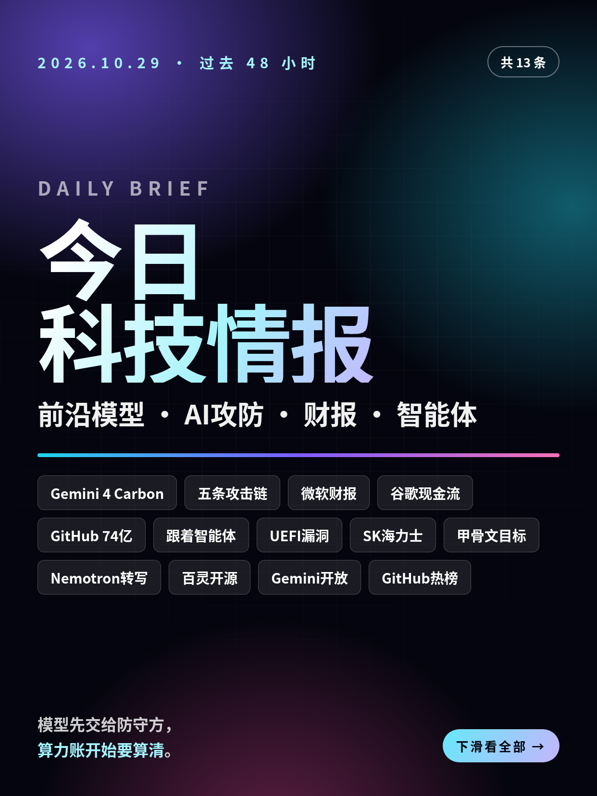
共 13 条，按重要性排序。点标题直接跳过去。
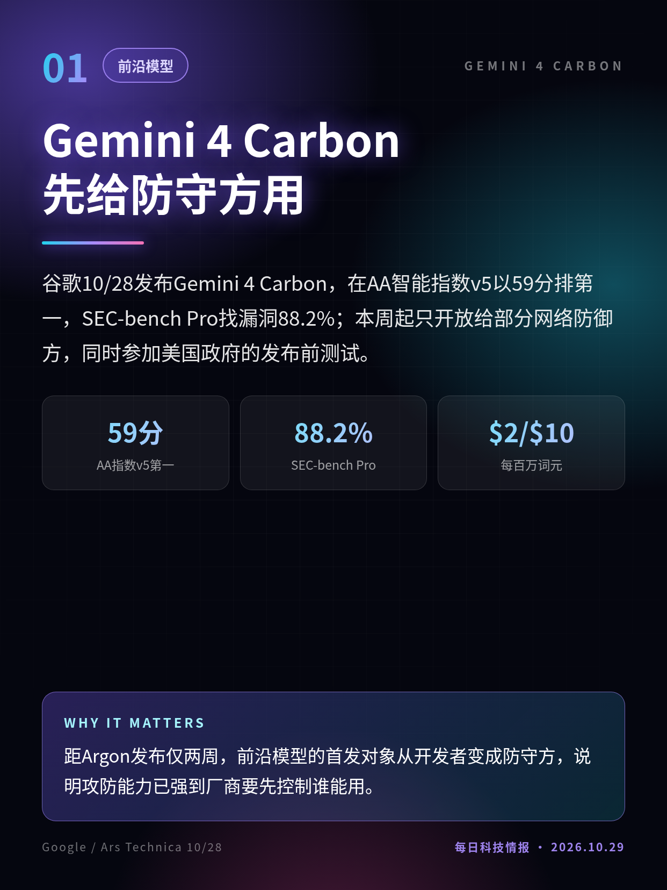
谷歌10/28发布Gemini 4 Carbon，在AA智能指数v5以59分排第一，SEC-bench Pro找漏洞88.2%；本周起只开放给部分网络防御方，同时参加美国政府的发布前测试。
距Argon发布仅两周，前沿模型的首发对象从开发者变成防守方，说明攻防能力已强到厂商要先控制谁能用。
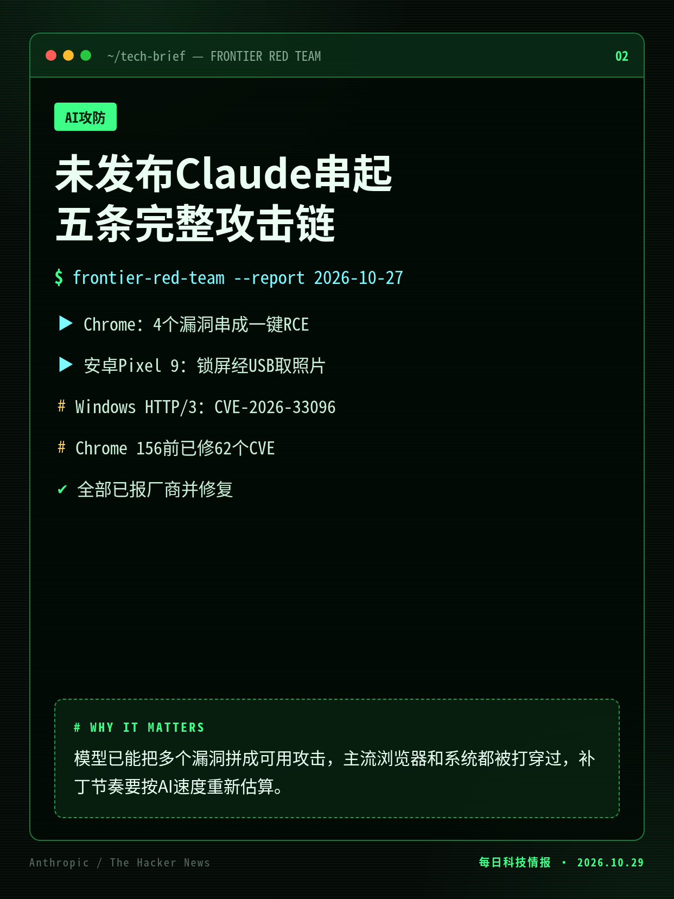
Anthropic 10/27披露：内部未发布模型在少量提示后写出Chrome一键远程执行、Safari同源绕过、安卓锁屏取数据、Windows远程宕机、Linux零点击执行五条利用链，均已修复。
模型已能把多个漏洞拼成可用攻击，主流浏览器和系统都被打穿过，补丁节奏要按AI速度重新估算。
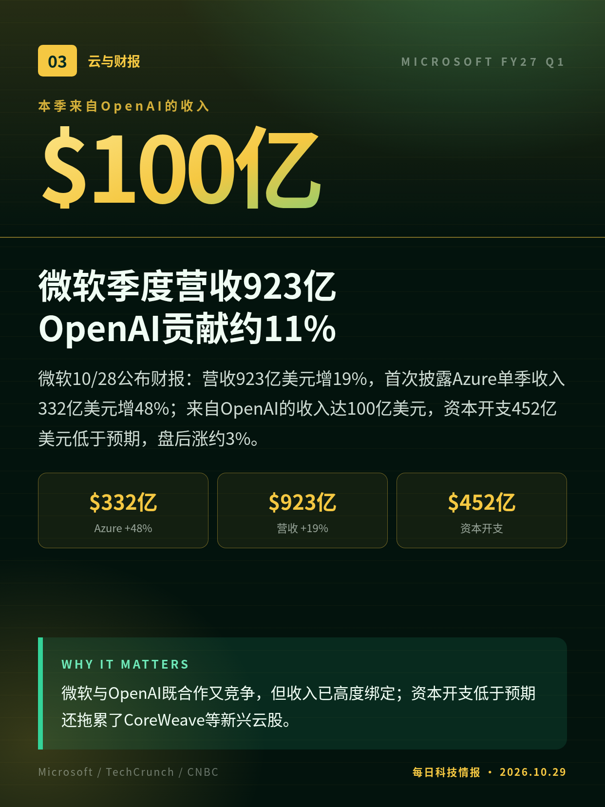
微软10/28公布财报：营收923亿美元增19%，首次披露Azure单季收入332亿美元增48%；来自OpenAI的收入达100亿美元，资本开支452亿美元低于预期，盘后涨约3%。
微软与OpenAI既合作又竞争，但收入已高度绑定；资本开支低于预期还拖累了CoreWeave等新兴云股。
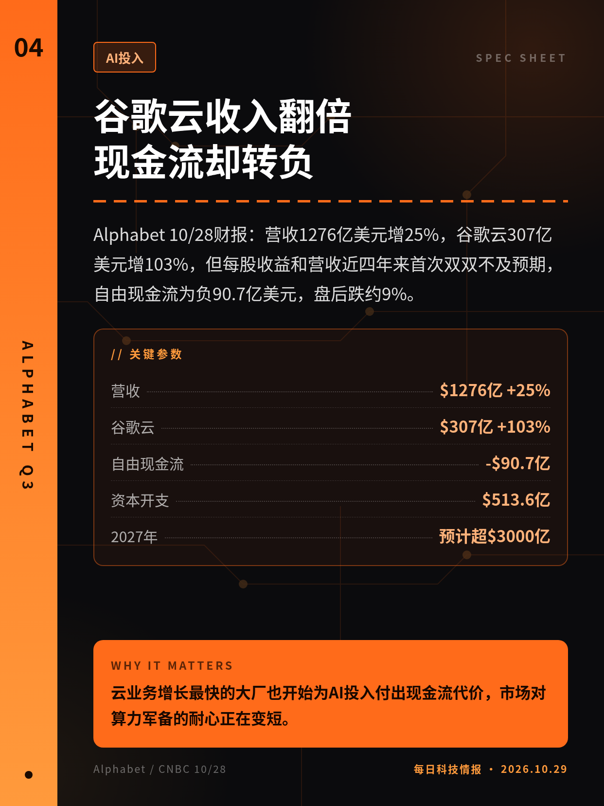
Alphabet 10/28财报：营收1276亿美元增25%，谷歌云307亿美元增103%，但每股收益和营收近四年来首次双双不及预期，自由现金流为负90.7亿美元，盘后跌约9%。
云业务增长最快的大厂也开始为AI投入付出现金流代价，市场对算力军备的耐心正在变短。
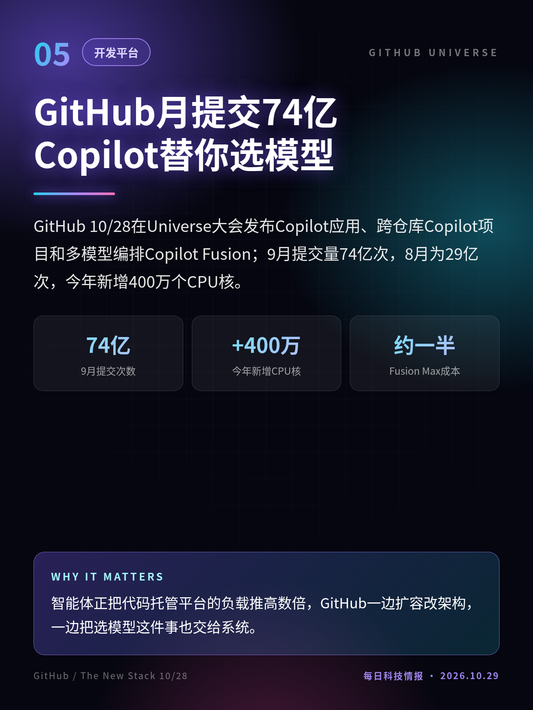
GitHub 10/28在Universe大会发布Copilot应用、跨仓库Copilot项目和多模型编排Copilot Fusion；9月提交量74亿次，8月为29亿次，今年新增400万个CPU核。
智能体正把代码托管平台的负载推高数倍，GitHub一边扩容改架构，一边把选模型这件事也交给系统。
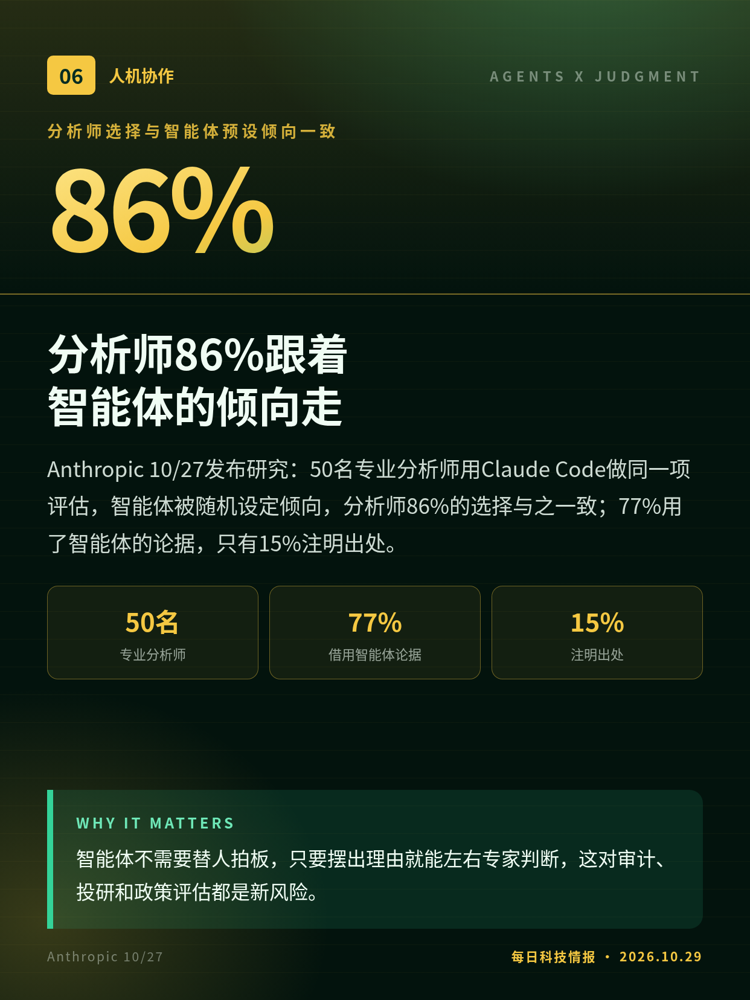
Anthropic 10/27发布研究：50名专业分析师用Claude Code做同一项评估，智能体被随机设定倾向，分析师86%的选择与之一致；77%用了智能体的论据，只有15%注明出处。
智能体不需要替人拍板，只要摆出理由就能左右专家判断，这对审计、投研和政策评估都是新风险。
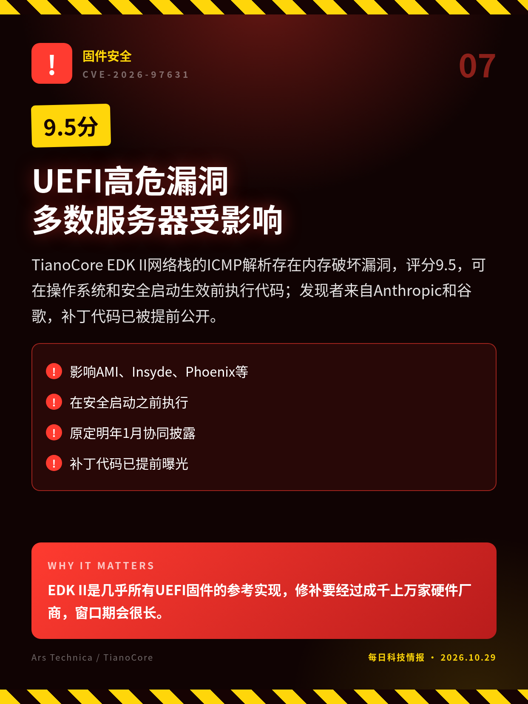
TianoCore EDK II网络栈的ICMP解析存在内存破坏漏洞，评分9.5，可在操作系统和安全启动生效前执行代码；发现者来自Anthropic和谷歌，补丁代码已被提前公开。
EDK II是几乎所有UEFI固件的参考实现，修补要经过成千上万家硬件厂商，窗口期会很长。
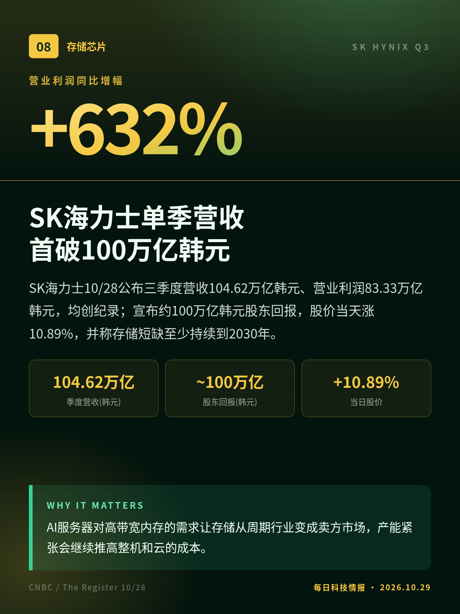
SK海力士10/28公布三季度营收104.62万亿韩元、营业利润83.33万亿韩元，均创纪录；宣布约100万亿韩元股东回报，股价当天涨10.89%，并称存储短缺至少持续到2030年。
AI服务器对高带宽内存的需求让存储从周期行业变成卖方市场，产能紧张会继续推高整机和云的成本。
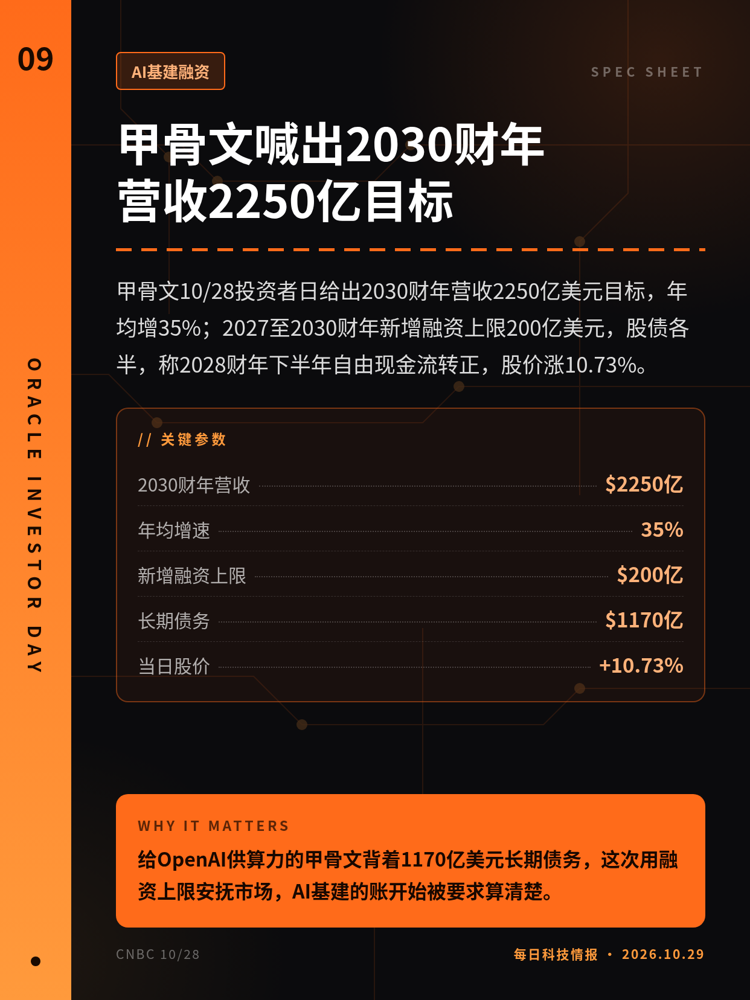
甲骨文10/28投资者日给出2030财年营收2250亿美元目标，年均增35%；2027至2030财年新增融资上限200亿美元，股债各半，称2028财年下半年自由现金流转正，股价涨10.73%。
给OpenAI供算力的甲骨文背着1170亿美元长期债务，这次用融资上限安抚市场，AI基建的账开始被要求算清楚。
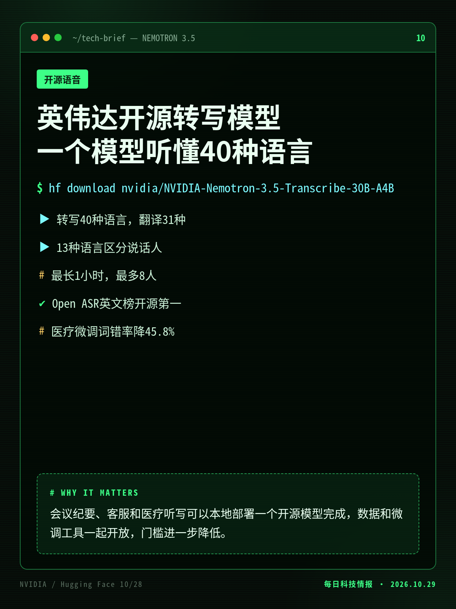
英伟达10/28发布开放权重的Nemotron 3.5 Transcribe：一个模型做转写、说话人区分、翻译和音频问答，支持40种语言、最长1小时录音和8名说话人，并开放Granary v2数据。
会议纪要、客服和医疗听写可以本地部署一个开源模型完成，数据和微调工具一起开放，门槛进一步降低。
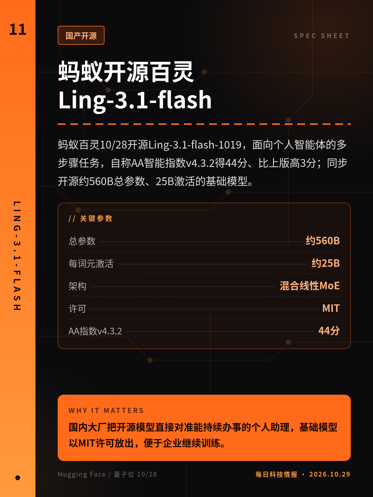
蚂蚁百灵10/28开源Ling-3.1-flash-1019，面向个人智能体的多步骤任务，自称AA智能指数v4.3.2得44分、比上版高3分；同步开源约560B总参数、25B激活的基础模型。
国内大厂把开源模型直接对准能持续办事的个人助理，基础模型以MIT许可放出，便于企业继续训练。
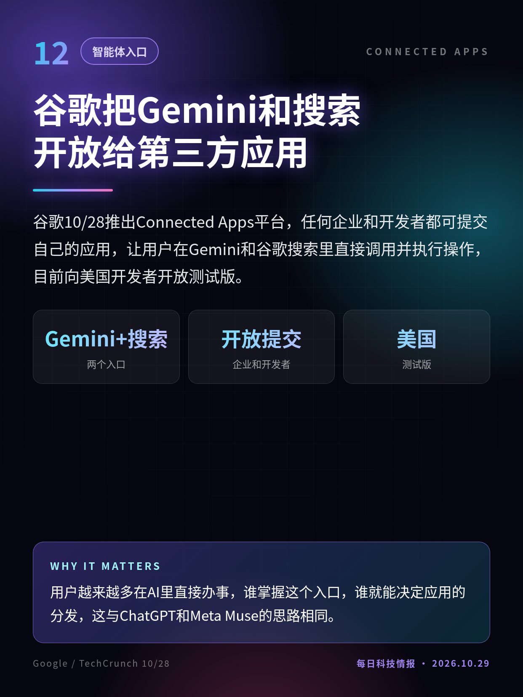
谷歌10/28推出Connected Apps平台，任何企业和开发者都可提交自己的应用，让用户在Gemini和谷歌搜索里直接调用并执行操作，目前向美国开发者开放测试版。
用户越来越多在AI里直接办事，谁掌握这个入口，谁就能决定应用的分发，这与ChatGPT和Meta Muse的思路相同。
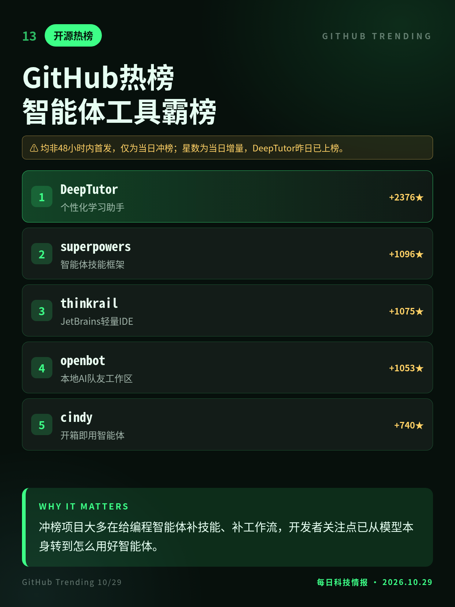
10/29 GitHub日榜靠前的多为智能体配套项目：JetBrains轻量IDE thinkrail、本地AI队友工作区openbot、技能框架superpowers和开箱即用智能体cindy。
冲榜项目大多在给编程智能体补技能、补工作流，开发者关注点已从模型本身转到怎么用好智能体。
能力描述为Anthropic自述，文中写明经过初始提示，人工参与程度未逐项拆分。
Anthropic自家研究，任务设在虚构机构，尚未经同行评审。
TianoCore公告首发于10/22，非48小时内首发；本条为10/27起的媒体扩散。
均非48小时内首发，仅为当日冲榜；星数为当日增量，DeepTutor昨日已上榜。
切换深浅两套图时，下载按钮会跟着当前这套走。黄标条目在新闻稿或官方口径出现前，请勿写成已交割或已定日期。上一期专区：2026-10-28。